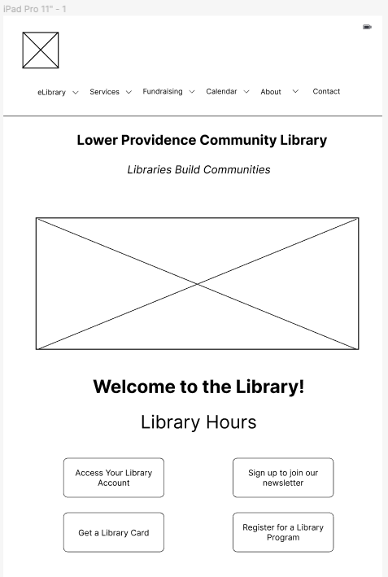

Responsive Redesign
Enhancing User Experience for the Lower Providence Community Library

Project Overview
The goal of this project was to practice the workflow of redesigning a simple website by identifying flaws in an existing interface. The primary objective was to transform the interface into a user-friendly platform that enhances user satisfaction
while also maintaining the core content and goals of the website. For this project, I chose the Lower Providence Community Library website, which is a library located in the greater Philadelphia region.
The process included
first identifying usability problems of the website including those related to efficiency, learnability, memorability, and accessibility. Next, I completed some preliminary sketches and low fidelity wireframes to brainstorm and quickly produce
various layouts and page structures. Afterwards, I came to a final sketch that I then improved upon by creating 3 high fidelity mockups (one for mobile, one for tablet, and one for desktop) with the use of a style guide. Lastly, using the
high fidelity mockups, I created the page itself using HTML and CSS.
Part 1: Identifying Usability Problems
The original website for the Lower Providence Community Library can be found at this link: Library Website. I chose this website because, while it's simplistic, I believe that there are many areas of improvement that can be done regarding things like navigation and ease-of-use when performing tasks such as checking new books and creating a library account.
Efficiency:
- There's a sliding gallery near the bottom of the page where the user must manually click through different books to see all the new releases instead of being able to search for them.
- The events are organized in a Google Calendar where the user must manually click through multiple events in a day to find the one they're looking for. One possible improvement could be to display the upcoming events on the home screen.
- There are random images that lead to a lot of unnecessary scrolling and lead to confusion, such as the Beanstack logo and Newest Arrivals picture. For example, they can be replaced with bold text that tells the user what the link below does.
- There’s no easy way for the user to register for a library account right on the website. They have to navigate to a separate website to do so and this may be frustrating for the user.
Layout and Navigation:
- The main navigation bar is at the bottom of the page when the user first arrives at the website, which may be unintuitive for most users.
- The main picture at the top is blurry and should be smaller so users know what they are scrolling down to and so that it doesn’t cover the entire page.
- The logo for the library at the top of the website is small and doesn’t have a lot of contrast with the background, making it difficult to read.
- On an enlarged monitor, the font of the items in the navigation bar is rather small and the picture takes up too much space.
- The 4 red buttons to access your library account, sign up to join the newsletter, get a library card, and register for a library program are not the same size.
Learnability:
- The location of the library events in a submenu item doesn't help users to remember where to locate events. If they come back to this website in the future, it may be hard to know where to go.
- There is no easy way for the users to locate how to log into their account. Instead, it is a small button located further down on the page.
Memorability:
- Some headings, such as “Welcome to the Library!” on the main page, should be centered so users can better remember what these important web pages look like.
- There is no page layout consistency for the Adult Services, Child Services, and Teen Services pages, making it difficult for users to quickly pinpoint and understand which page they are on, as well as locate information on that page.
Accessibility Issues:
To begin, there are 5 different contrast issues present on the page. The main header/title of the webpage has low contrast against its background picture and four red buttons further down on the page have contrast issues with the text on them
as well. Additionally, there is a sliding gallery in the main body of the web page that contains 2 pictures without any alternative text and several instances of redundant title text or small title text. On the other hand, many other features
on the web page have ARIA labels as well as linked images with alternative text, which are good features to have. From a visual perspective, I agree with a lot of the findings that were generated in the report.
A lot of the text on
the screen, whether it be on the navigation bar or on the main body seems to be too small for the user to easily read. Furthermore, viewing the website on a mobile device is difficult because some of the information, text, and headings are
cut off. Lastly, using a secondary monitor where the width of the screen is larger than the height causes the layout to be distorted and makes the text very small.
Part 2: Visual Redesign
In the first part of this task, I performed a speed sketching exercise in which I quickly sketched 9 options for the website redesign. This helped me brainstorm many different possible webpage layouts and compare attributes across them. The results of this activity are shown below:

Afterwards, I analyzed these sketches and thought about elements that I would want to include in a final webpage. Some attributes that I wanted to include were having the navigation bar stick to the top of the page, make each button the same dimensions, and include upcoming events on the homepage. My final sketch looked like the following:
Low Fidelity Wireframing:
Using my final sketch as a reference, I proceeded to create 3 wireframes for each screen size (mobile, tablet, and desktop). Each wireframe contained the same content and was designed in a way that made information accessible and user-friendly, even on smaller screens. Each feature in the wireframes is also annotated by the problem that it solves:
Mobile Low Fidelity Wireframes:
Tablet Low Fidelity Wireframes:
Desktop Low Fidelity Wireframe:

Visual Design Style Guide:

High-Fidelity Mockups:
Next, I designed 3 high fidelity mockups that represent the final, polished look of the new website. Each of the 3 wireframes are based on their low fidelity counterparts and were created using the visual design style guide. These mockups are shown below:
Mobile High Fidelity Mockups
Tablet High Fidelity Mockups

Desktop High Fidelity Mockup
Part 3: Responsive Redesign
Using the high fidelity prototypes, I created the responsive final page using HTML and CSS. The link to the website is attached here: Final Website
Notes about Accessibility Using WebAIM:The only alerts that are present
Conclusion:
Overall, I found many issues related to the original website that could be fixed by making content larger (i.e. headers, texts, logos, and other pictures) and reorganizing this content in a more user-friendly way. For example, including the navigation bar at the top was an improvement that was made and also making it easier for the user to locate certain important items such as upcoming events, reading challenges, and how to register for an account or get a library card. In the end, I had a good experience analyzing different design choices, creating mockups, iterating over those designs, and creating a polished final product.